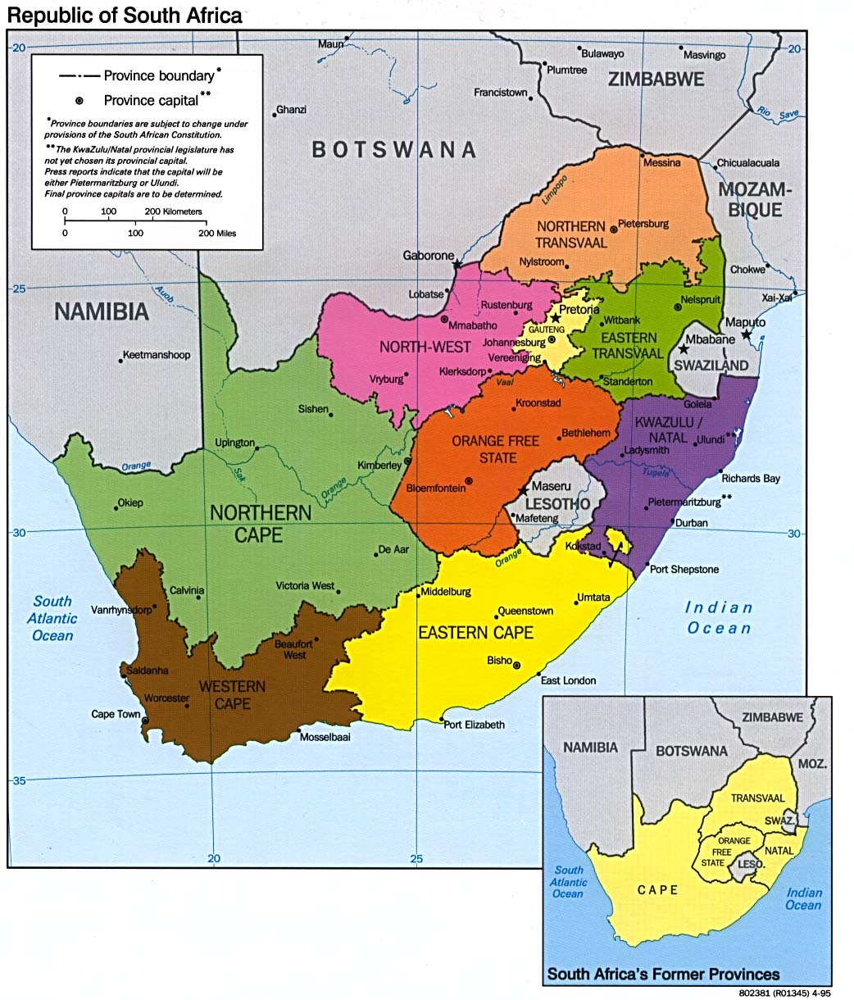

Explore
Move around the map to explore the places connected to displacement narratives.
Story locations will appear here as project data is added.

This map highlights narratives of forced displacement across South Africa. Drawing upon District Six collections and narratives gathered with our partners, points depicting individual stories will populate the map. Individuals may voluntarily submit stories for inclusion in the map. These will be reviewed by the project team to ensure they adhere to our community standards and ethical guidelines for inclusion. Participation may be revoked at any time. As we gather more stories, more points will populate, creating a living map experience.
Move around the map to explore the places connected to displacement narratives.
Story locations will appear here as project data is added.
